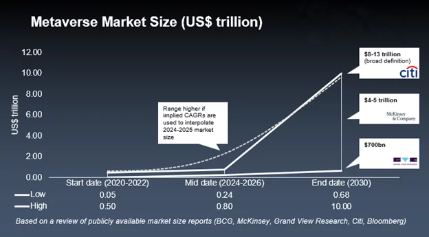

Future of metaverse forecast
Many people have predicted the rapid growth of the Metaverse. Onlookers expect the rapid development of the Metaverse by relying on intuition. Experts look at the underlying technologies or financials. The Metaverse market size is usually estimated based on calculations of the development of the sectors that make up the emerging metaverse industry. However, Metaverse market sizing is challenging as the sectors that make up this industry are nascent, and the concept of Metaverse is relatively new.
Check out our updated article for the most comprehensive metaverse market size and forecast explanation!How is Market Size calculated?
The metaverse market incorporates various virtual and augmented experiences, including online gaming, workspaces, social networking, etc. However, the metaverse market includes much more than just this. Studying the metaverse market map helps us understand the different sectors of the metaverse industry. This allows us to understand which sectors are a part of the Metaverse market. These sectors are not limited to Mixed Reality. Technologies such as 5G, blockchain, and Artificial intelligence are also a part of this emerging industry, acting as end users or suppliers. Understanding what the metaverse market entails is essential to predicting the market size. This infographic below helps us understand the key subsectors involved in the Metaverse. We’ll be able to understand why it is crucial to understand and learn the taxonomy of the Metaverse before calculating its market size as we progress in this article.
Metaverse Market Forecasts
Various market experts have estimated what they believe the Metaverse to grow to in the next eight years. While all these market analysts tend to agree that the metaverse market will be significant by the decade’s end, the actual market size tends to vary significantly. These estimates range from US$700 billion to US$13 trillion. Such a vast range of estimates is because estimating an industry’s market size entails many assumptions about how these markets will grow over the next decade – literally forecasting the future. Studying various market size calculations, Metaverse Insider did a Meta-analysis of different market sizes, comparing the differences in calculating these market sizes.
Simply put, the market size refers to the total addressable market of a particular industry. It comprises the total revenue the Metaverse Market will make, which can also be referred to as the Total Addressable Market. In other words, analysts estimate the total revenue the industry will drive by calculating the current total revenue and evaluating the growth rate of the underlying sectors. Many organizations tend to calculate and predict the size based on assumptions and predictions on how the Metaverse market will develop and how much revenue each sector will make. Companies use these market size calculations to identify opportunities in their existing market. Startups also use these numbers to analyze a market entry opportunity and justify investments in a highly volatile and unpredictable venture. Calculations by various market analysts have helped developers, investors, and other new entrants in the metaverse market identify the opportunities present in the Metaverse. In June 2022, McKinsey & Company launched a detailed market report called Value creation in the Metaverse. The report predicted a $5 trillion by 2030. This prediction is indeed an ambitious number. However, in Appendix B, the report details how McKinsey & Company calculated a $5 trillion market size. The section goes through each part of the Metaverse industry and explains how each section’s market size was calculated. The readers can analyze the sectors which make up the Metaverse industry. Moreover, the readers can understand the market and interpret which sectors will have an impact in the coming decade. Reading the descriptions of how the market size of each sector was calculated, one realizes that many of these calculations are based on assumptions and educated guesses. While it is virtually impossible to get the prediction right, it is helpful guide for decision-makers.
Metaverse Market Sectors Involved
Blockchain
Blockchain technology is a ledger of all transactions across a peer-to-peer network. The concept behind this technology is to let participants confirm and identify transactions without the need for a central authority. A technology that gained popularity through the Bitcoin whitepaper issued in 2008/2009 has now become a significant part of the financial and technology industries. Blockchain is the technology behind many Defi and Web3 startups. For our Metaverse Market Sizing, the Blockchain sector will entail all Layer 1 and 2 blockchain technologies and their use cases. Thus, the calculation will also incorporate NFTs and cryptocurrencies (tokens). These NFTs and cryptocurrencies are a part of many popular virtual worlds such as Decentraland and The Sandbox, which have their native tokens (cryptocurrencies) and NFTs (virtual real estate). For Metaverse Insider’s Market Size, we will not include the cryptocurrencies which are not relevant to the Metaverse. This can be a judgement call. For example, including Ethereum as a part of the Metaverse may or may not be relevant according to different analysts. We believe many ERC-20 tokens are used in decentralized virtual worlds, thus, they will be included in the Metaverse. The blockchain sector will also include crypto exchanges and NFT marketplaces. The companies like OpenSea, Binance, and Crypto.com are all a part of the Blockchain (and Metaverse) industry.Metaverse eCommerce
The eCommerce industry has seen a dramatic rise in the last decade, with companies like Shopify and Amazon becoming significant players in the space. Furthermore, the Covid19 pandemic and subsequent global lockdowns helped penetrate this industry in many new countries. The natural progression to Web3 and Metaverse seems natural to many brands. Thus, many prominent brands are looking to be a part of the Metaverse buying virtual land, launching NFT projects, or holding virtual events. Virtual fashion for avatars is becoming increasingly popular as organizations such as Nike, Lacoste, and Wrangler identify as an opportunity to be early entrants in the Metaverse world. Click here to learn about some of the brands investing in the Metaverse. Moreover, many online sales now incorporate augmented reality by giving many products a real-world feel. Companies like Matterport help buyers look at a property virtually as if they are touring the place in real life. Traditional Web2 eCommerce companies have a similar approach, incorporating augmented reality into many products.Artificial Intelligence (AI)
AI is an integral part of the Metaverse as the development of this technology will significantly improve the customer experience in virtual worlds. At Meta’s event titled “Inside the lab: Building for the metaverse and AI,” Zuckerberg stated that artificial intelligence could be the most foundational technology of our time. This statement indicates that AI and machine learning will play an essential role in the emerging Metaverse virtual worlds, regardless of whether they are decentralized or centralized gateways. Metaverse Insider analyzed a study about the importance of Artificial Intelligence in the Metaverse here. The image below shows Supervised Learning, Unsupervised Learning, and Reinforcement Learning are all critical aspects of the Metaverse; thus, it is included in our Metaverse Market Size calculations.5G & Connectivity
Connectivity and 5G technology are essential in the calculation. Telecommunications have come a long way, and internet connection has become the norm in most places. If the Metaverse industry will scale quickly, connectivity has to be seamless. This means cellular devices should be able to connect easily. The most popular connectivity technologies include Bluetooth, Wi-Fi, and 5G for the rapid adoption of the Metaverse industry. Thus, to perform calculation, we must also consider all these Connectivity technologies which drive the Metaverse Industry. Bandwidth is an important factor of the Metaverse as we start to explore how enormous these virtual worlds are. In his book, Matthew Ball uses the example of Microsoft Flight Simulator which is a game with 500,000,000 square kilometres of space which includes features such as two trillion uniquely rendered trees, 1.5 million unique buildings etc. Virtual worlds like this require a significant amount of bandwidth to sustain itself. As virtual environments increase, the requirement for more bandwidth and better connectivity will skyrocket. Thus, seamless connectivity will be an important part of the Metaverse as in many aspects, the success of technologies like 5G is directly tied to the success of the Metaverse Industry.Metaverse Cloud Computing
The storage and processing of data at a large scale are essential to the emergence of a virtual reality universe. As 3D and VR technology becomes mainstream and adopting these technologies becomes a part of gaming and remote working, cloud computing will become an essential aspect of the Metaverse. Thus, the calculation includes Cloud Computing, and we will see how the penetration rate of the cloud computing platforms will impact the Metaverse over the next decade.Metaverse GPUs and mining chips
The hardware that powers the Metaverse is critical to calculation. Companies like NVIDIA and Intel are working on building graphic processing units and mining chips that can improve efficiency and help power 3D and blockchain technology at mass. As the adoption of virtual worlds increases (especially in 3D), the requirements for GPUs will skyrocket. For high resolution and a demand for real time rendering of virtual environments, the market size of GPUs (and subsequently the metaverse) will grow. Thus, the calculations of the metaverse forecast will assume the growth of the revenue of GPU and mining chip manufacturers.Metaverse Gaming (& VR Gaming)
Gaming is one of the essential aspects of the Metaverse. Currently, multiplayer games have gained much popularity, with games like Fortnite, Grand Theft Auto, and Call of Duty gaining much traction. These games tend to have a common theme. They allow multiplayer options and friends to interact online while conducting a specific activity. Virtual worlds like Horizon have the same theme. However, virtual worlds like Decentraland and The Sandbox allow users to build on their platforms and monetize their experiences. While the Decentralization aspect of gaming has not gained much traction yet, funding in these virtual worlds has spiked. Thus, Web3 gaming studios such as Gala Games have gotten funding, and traditional gaming studios like Epic Games are betting on the rise of Web3 gaming. Click here to read our In-Depth article on Metaverse gaming which explains the infographic below.Fitness: The fitness industry has taken off as people become aware of improving their health and living healthier lives. For this sector, it may be a great idea to include recreational activities like local sports leagues for children and adults. Metaverse may be an integral part of the next chapter in the fitness industry as users begin to save time by working out at home. VR headsets like Oculus have facilitated in-home workouts. Games like Thrill of the Fight are often played by individuals who would like a great boxing workout at home. Thus, in our market, we will include the fitness industry to see how the industry adapts to the Metaverse.
Metaverse Social Networking
Social Networking was an integral part of the Web2 phase of the internet. Social Networks like Facebook and Twitter have become a vital part of the worldwide community. In the Metaverse, social media will evolve as companies like Facebook have renamed their company to Meta, and Twitter is introducing NFT features on their platforms. Social Media will undoubtedly adapt if users jump to the Metaverse. To calculate the market in 2030, it is important to understand how social media will evolve in the next eight years. Users may shift to virtual worlds like Horizon Worlds and Decentraland, which are already a part of the calculation under gaming.Workspaces: Virtual work applications have become essential in many offices as employees begin to work from or adopt a hybrid work model. Microsoft, which acquired Skype and also has Teams, has goals to enhance the virtual work world. Many virtual applications are being built to facilitate a team working from home in Virtual Reality. As many organizations continue to work virtually, virtual workspaces will become integral to the Metaverse.
Metaverse Development Services
Many development organizations are facilitating projects to be built in Virtual Reality. There are more complications when developing in 3D than 2D platforms, issues that have not been entirely solved yet. Development organizations facilitating growth in the Metaverse by providing development services will be integral to the Metaverse. Many of these startups help big brands like Nike and Dior to develop NFT projects of virtual spaces in virtual worlds. As the users of Metaverse grow, so will the development services required. For this section of the market size, we can also include blockchain development services as the importance of blockchain technology grows. Almost every virtual world and Web3 gaming organization is adopting blockchain technology for their in-game economy.Metaverse Media / Market Analysts
Metaverse media organizations and market analysts like Metaverse Insider are essential in educating the public about metaverse projects. They also help investors and developers make informed decisions about how the Metaverse is developing and which sectors to focus on. Thus Media / Market Analysts (who relate to the Metaverse) will be a part of the Metaverse market.Complications with calculating market size
Once the main sectors of the calculations are defined, we can calculate tseir current market size. This calculation is achieved by calculating their latest market size (total annual revenue). The latest information that we have for each sector is for 2021. Thus, we take the current market size (2021) and assume a year-over-year growth. The year-over-year growth rate is based on how the sector will evolve over the coming years. How did we get to the market size of each sector? We look at our resources and make an educated prediction as to what the sector’s market size could be. These predictions help us understand why there are so many discrepancies in the calculation. While some companies may predict the growth rate of a particular sector to be 10%, others may predict it to be 30%. As one can imagine, these variations can significantly affect the final calculation. Once we have determined each sector’s market size, we look at the penetration rate of each sector in the Metaverse Industry. This is done because not all these sectors are entirely a part of the Metaverse Industry. For example, the Media / Market Analysts sector does not cover the Metaverse completely. Not all GPU chips will be used to power the Metaverse. Only a select number of Media outlets talk about the Metaverse. Some Media channels talk about entertainment, education, sports, etc. Thus, the penetration rate determines how much the Metaverse Industry influences each sector. For example, only 1 percent of media organizations may cover the Metaverse. However, we may see a growth in the Metaverse market in the coming years as more organizations start to cover this space. It is important to note that there may be differences in this calculation among different analysts. Some may include all tech media organizations, while others also have financial media in the penetration rate. These differences in judgement can lead to a wide range of predictions.Final Thoughts
Indeed the predictions of $13 trillion by the likes of Citi are a very eye-catching headline that captivates onlookers. Metaverse as a concept is still a new idea, and it incorporates many developing technologies like 5G, AI, and blockchain technology. It isn’t straightforward to predict the growth of all such technologies and conclude with a certain number. This article explored the complications in predicting the market size, which was calculated by McKinsey & Company and Grandview Research. There will always be differences in calculations based on judgement calls the analyst makes.